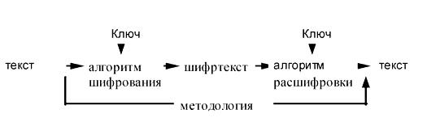

Категория Crypto
Что это такое? Автор: Кочева Елизавета
Криптография — наука о методах обеспечения конфиденциальности (невозможности прочтения информации посторонним), целостности данных (невозможности незаметного изменения информации), аутентификации (проверки подлинности авторства или иных свойств объекта), а также невозможности отказа от авторства.
Криптография изучает методы шифрования информации, например, обратимого преобразования исходного текста на основе секретного алгоритма или ключа в шифрованный текст (шифр-текст). Традиционная криптография образует раздел симметричных криптосистем, в которых зашифрование и расшифрование проводится с использованием одного и того же секретного ключа. Помимо этого раздела современная криптография включает в себя асимметричные криптосистемы, системы электронной цифровой подписи, хеш-функции, управление ключами, получение скрытой информации, квантовую криптографию.
Думаю, пора рассмотреть парочку простых и стандартных, но от того не менее интересных шифра.
Шифр Цезаря
Построен по принципу сдвига: каждый символ в открытом тексте заменяется символом, находящимся на некотором постоянном числе позиций левее или правее него в алфавите. Число позиций определяется ключом.

В данном примере сдвиг равен 3. Первый элемент алфавита A заменяется на четвёртый элемент D.
Попробуем зашифровать свою фразу «У страха глаза велики». Ключ зададим 9.
X – исходный текст (алфавит), Y – зашифрованный, i – нумерация символов.
|
X |
А |
Б |
В |
Г |
Д |
Е |
Ж |
З |
И |
Й |
К |
Л |
М |
Н |
О |
П |
|
Y |
Й |
К |
Л |
М |
Н |
О |
П |
Р |
С |
Т |
У |
Ф |
Х |
Ц |
Ч |
Ш |
|
i |
1 |
2 |
3 |
4 |
5 |
6 |
7 |
8 |
9 |
10 |
11 |
12 |
13 |
14 |
15 |
16 |
|
X |
Р |
С |
Т |
У |
Ф |
Х |
Ц |
Ч |
Ш |
Щ |
Ъ |
Ы |
Ь |
Э |
Ю |
Я |
|
Y |
Щ |
Ъ |
Ы |
Ь |
Э |
Ю |
Я |
А |
Б |
В |
Г |
Д |
Е |
Ж |
З |
И |
|
i |
1 |
2 |
3 |
4 |
5 |
6 |
7 |
8 |
9 |
10 |
11 |
12 |
13 |
14 |
15 |
16 |
Таким образом, наша фраза становится такой «Ь ъыщиюи лфири кнфсус».
Шифр Виженера
Метод полиалфавитного шифрования буквенного текста с использованием ключевого слова.
Принцип шифрования.
Принцип рассмотрим на конкретном примере. Попробуем зашифровать слово «Виженер». Нам нужно задать ключевое слово, например, «лимон». Далее смотрим на пересечение первой буквы исходного слова (по строке) и первой буквы ключа (по столбцу): в и л. Получаем букву н. Идём дальше.
и и и = р.
И так со всем словом.
Когда количество букв в ключе закончилось, зацикливаем его, пока не зашифруем
весь текст.
Получаем зашифрованное «нртуърш».

Криптография, криптосистемы, ключи и алгоритмы. Автор: Огурцова Карина (заголовок)
Хотелось бы немного поговорить про криптографию в целом, рассмотреть основные понятия и алгоритмы.
Криптография — наука о методах обеспечения конфиденциальности (невозможности прочтения информации посторонним), целостности данных (невозможности незаметного изменения информации), аутентификации (проверки подлинности авторства или иных свойств объекта), а также невозможности отказа от авторства.
Криптосистемы
Криптосистема работает по определенной методологии (процедуре). Она состоит из: одного или более алгоритмов шифрования (математических формул); ключей, используемых этими алгоритмами шифрования; системы управления ключами; незашифрованного текста; и зашифрованного текста (шифртекста).

Согласно методологии сначала к тексту применяются алгоритм шифрования и ключ для получения из него шифртекста. Затем шифртекст передается к месту назначения, где тот же самый алгоритм используется для его расшифровки, чтобы получить снова текст. Также в методологию входят процедуры создания ключей и их распространения.
Методология с использованием ключа
В этой методологии алгоритм шифрования объединяет ключ с текстом для создания шифртекста. Безопасность систем шифрования такого типа зависит от конфиденциальности ключа, используемого в алгоритме шифрования, а не от хранения в тайне самого алгоритма.
Основная проблема, связанная с этой методологией, состоит в том, как сгенерировать и безопасно передать ключи участникам взаимодействия. Существуют две методологии с использованием ключей - симметричная (с секретным ключом) и асимметричная (с открытым ключом). Каждая методология использует свои собственные процедуры, свои способы распределения ключей, типы ключей и алгоритмы шифрования и расшифровки ключей. Так как терминология, используемая этими методологиями, может показаться непонятной, дадим определения основным терминам:
|
Термин |
Значение |
Замечания |
|
Симметричная методология |
Используется один ключ, с помощью которого производится как шифрование, так и расшифровка с использованием одного и того же алгоритма симметричного шифрования. Этот ключ передается двум участникам взаимодействия безопасным образом до передачи зашифрованных данных. |
Часто называется методологией с секретным ключом. |
|
Асимметричная методология |
Использует алгоритмы симметричного шифрования и симметричные ключи для шифрования данных Использует алгоритмы асимметричного шифрования и асимметричные ключи для шифрования симметричного ключа. Создаются два взаимосвязанных асимметричных ключа. Симметричный ключ, зашифрованный с использованием одного асимметричного ключа и алгоритма асимметричного шифрования, должен расшифровываться с использованием другого ключа и того же алгоритма шифрования. Создаются два взаимосвязанных асимметричных ключа. Один должен быть безопасно передан его владельцу, а другой - тому лицу, которое отвечает за хранение этих ключей (CA - сертификационному центру ключей), до начала их использования. |
Часто называется методологией с открытым ключом |
Распространение ключей
Ясно, что в обоих криптосистемах нужно решать проблему распространения ключей.
В симметричных методологиях эта проблема стоит более остро, и поэтому в них ясно определяется, как передавать ключи между участниками взаимодействия до начала взаимодействия. Конкретный способ выполнения этого зависит от требуемого уровня безопасности. Если не требуется высокий уровень безопасности, то ключи можно рассылать с помощью некоторого механизма доставки. Банки, например, используют почту для рассылки PIN-кодов. Для обеспечения более высокого уровня безопасности более уместна ручная доставка ключей ответственными за это людьми, возможно по частям несколькими людьми.
Асимметричные методологии пытаются обойти эту проблему с помощью шифрования симметричного ключа и присоединения его в таком виде к зашифрованным данным. А для распространения открытых асимметричных ключей, используемых для шифрования симметричного ключа, в них используются центры сертификации ключей. CA, в свою очередь, подписывают эти открытые ключи с помощью секретного асимметричного ключа CA. Пользователи такой системы должны иметь копию открытого ключа CA. Теоретически это означает, что участникам взаимодействия не нужно знать ключей друг друга до организации безопасного взаимодействия.
Алгоритмы шифрования
Алгоритмы шифрования с использованием ключей предполагают, что данные не сможет прочитать никто, кто не обладает ключом для их расшифровки. Они могут быть разделены на два класса, в зависимости от того, какая методология криптосистем напрямую поддерживается ими.
Симметричные алгоритмы
Для шифрования и расшифровки используются одни и те же алгоритмы. Один и тот же секретный ключ используется для шифрования и расшифровки. Этот тип алгоритмов используется как симметричными, так и асимметричными криптосистемами.
|
Тип |
Описание |
|
DES (Data Encryption |
Популярный алгоритм шифрования, используемый как стандарт шифрования данных правительством США. Шифруется блок из 64 бит, используется 64-битовый ключ (требуется только 56 бит), 16 проходов |
|
IDEA (международный |
64-битный блочный шифратор, 128-битовый ключ, 8 проходов Предложен недавно; хотя до сих пор не прошел полной проверки, чтобы считаться надежным, считается более лучшим, чем DES |
|
RC2 |
64-битный блочный шифратор, ключ переменного размера Приблизительно в 2 раза быстрее, чем DES Конфиденциальный алгоритм, владельцем которого является RSA Data Security |
|
RC4 |
Потоковый шифр, байт-ориентированный, с ключом переменного размера. Приблизительно в 10 раз быстрее DES. Конфиденциальный алгоритм, которым владеет RSA Data Security |
|
Blowfish. |
64-битный блочный шифратор, ключ переменного размера до 448 бит, 16 проходов, на каждом проходе выполняются перестановки, зависящие от ключа, и подстановки, зависящие от ключа и данных. Быстрее, чем DES Разработан для 32-битных машин |
|
Поточные шифры |
Быстрые алгоритмы симметричного шифрования, обычно оперирующие битами (а не блоками бит). Разработаны как аналог устройства с одноразовыми ключами, и хотя не являются такими же безопасными, как оно, по крайней мере практичны. |
2.3.2 Асимметричные алгоритмы
Асимметричные алгоритмы используются в асимметричных криптосистемах для шифрования симметричных сеансовых ключей.
Используется два разных ключа - один известен всем, а другой держится в тайне. Обычно для шифрования и расшифровки используется оба этих ключа. Но данные, зашифрованные одним ключом, можно расшифровать только с помощью другого ключа.
|
Тип |
Описание |
|
RSA |
Популярный алгоритм асимметричного шифрования, стойкость которого зависит от сложности факторизации больших целых чисел. |
|
ECC (криптосистема |
Использует алгебраическую систему, которая описывается в терминах точек эллиптических кривых, для реализации асимметричного алгоритма шифрования. Современные его реализации показывают, что эта система гораздо более эффективна, чем другие системы с открытыми ключами. Его производительность приблизительно на порядок выше, чем производительность RSA, Диффи-Хеллмана и DSA. |
|
Эль-Гамаль. |
Вариант Диффи-Хеллмана, который может быть использован как для шифрования, так и для электронной подписи. |
2.4 Хэш-функции
Хэш-функции являются одним из важных элементов криптосистем на основе ключей. Их относительно легко вычислить, но почти невозможно расшифровать. Хэш-функция имеет исходные данные переменной длины и возвращает строку фиксированного размера, обычно 128 бит. Хэш-функции используются для обнаружения модификации сообщения.
|
Тип |
Описание |
|
MD4 |
Самая быстрая, оптимизирована для 32-битных машин Не так давно взломана |
|
MD5 |
Наиболее распространенная из семейства MD-функций. Похожа на MD4, но средства повышения безопасности делают ее на 33% медленнее, чем MD4 Обеспечивает целостность данных Считается безопасной |
|
SHA (Secure |
Создает 160-битное значение хэш-функции из исходных данных переменного размера. Предложена NIST и принята правительством США как стандарт Предназначена для использования в стандарте DSS |
Инструменты, которые могут используются в решении задач, связанных с криптографией.
· PkCrack — инструмент для взлома PkZip-шифрования
· RSACTFTool — инструмент для восстановления закрытого ключа RSA с помощью различных атак
· RSATool — генерация закрытого ключ со знанием p и q
· XORTool — инструмент для анализа многобайтового xor-шифра